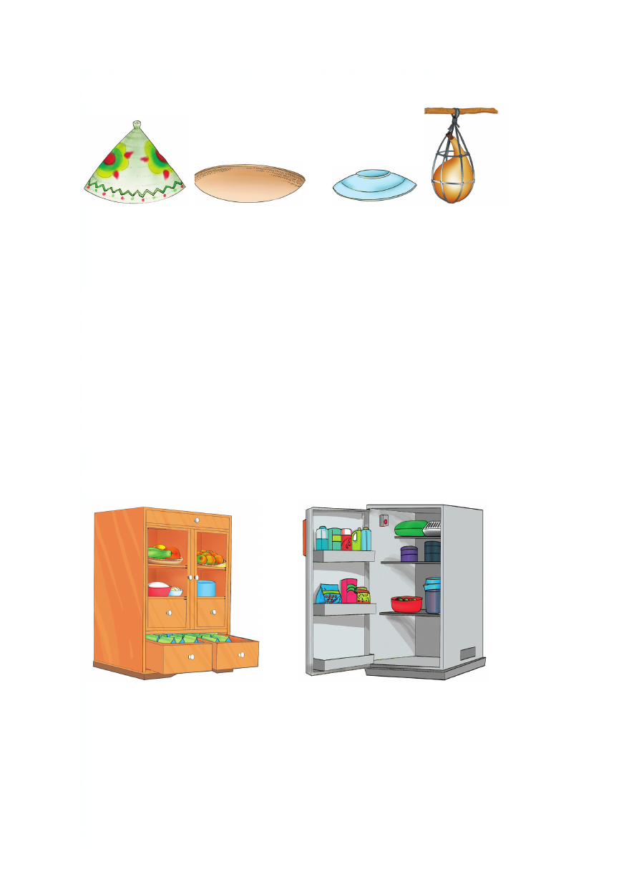

Kutunza chakula kwa usalama
kawa ungo sahani kifaa cha
kuning'inizia
chakula
Chakula kinatakiwa kitunzwe kwa usafi na usalama. Chakula
kilichotunzwa vizuri hakiharibiwi na wadudu. Mfano wa wadudu
wanaoharibu chakula ni mende, nzi na sisimizi. Wadudu hawa
hueneza magonjwa kama kuharisha na kipindupindu. Wadudu
wanapotua kwenye chakula huacha vijidudu vya magonjwa.
Ukila chakula hicho unaweza kupata magonjwa. Tunatunza
chakula ili kiwe salama. Chakula salama uwezesha mwili kuwa
na afya bora.
Zifuatazo ni njia mbalimbali za kutunza chakula
Kabati la chakula Jokofu
Kutunza chakula kwa usalama kawa ungo sahani kifaa cha kuning'inizia chakula Chakula kinatakiwa kitunzwe kwa usafi na usalama. Chakula kilichotunzwa vizuri hakiharibiwi na wadudu. Mfano wa wadudu wanaoharibu chakula ni mende, nzi na sisimizi. Wadudu hawa hueneza magonjwa kama kuharisha na kipindupindu. Wadudu wanapotua kwenye chakula huacha vijidudu vya magonjwa. Ukila chakula hicho unaweza kupata magonjwa. Tunatunza chakula ili kiwe salama. Chakula salama uwezesha mwili kuwa na afya bora. Zifuatazo ni njia mbalimbali za kutunza chakula Kabati la chakula Jokofu